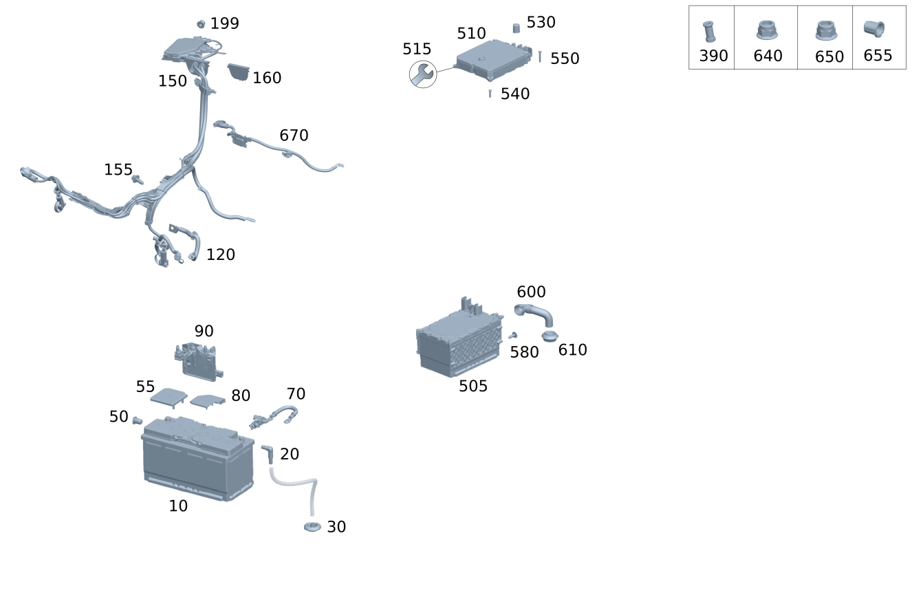

| № | Артикул | Название | Кол. | Примечание | Ограничение |
|---|---|---|---|---|---|
| 10 | A 000 982 99 08 | АКБ бортовой сети (BORDNETZBATTERIE) | 1 | Под сиденьем водителя; 12V/80AH | M264 |
| 10 | A 001 982 81 08 | АКБ бортовой сети (BORDNETZBATTERIE) | 1 | Под сиденьем водителя; 12V/80AH | M264 |
| 10 | A 000 982 91 08 | Стартерная АКБ | 1 | Под сиденьем водителя; 12V/95AH | M264+(228/362/549/864/882/889) |
| 10 | A 001 982 82 08 | АКБ бортовой сети (BORDNETZBATTERIE) | 1 | Под сиденьем водителя; 12V/92AH | M264+(228/362/549/864/882/889) |
| 10 | A 000 982 99 08 | АКБ бортовой сети (BORDNETZBATTERIE) | 1 | Под сиденьем водителя; 12V/80AH | B01+(M254/M256/M654/M656) |
| 10 | A 001 982 81 08 | АКБ бортовой сети (BORDNETZBATTERIE) | 1 | Под сиденьем водителя; 12V/80AH | B01+(M254/M256/M654/M656) |
| 10 | A 000 982 99 08 | АКБ бортовой сети (BORDNETZBATTERIE) | 1 | Под сиденьем водителя; 12V/80AH | B01+(M254/M256/M654/M656) |
| 10 | A 000 982 91 08 | Стартерная АКБ | 1 | Под сиденьем водителя; 12V/95AH | B01+(M254/M256/M654/M656)+(228/362/549/864/882/889) |
| 10 | A 000 982 97 24 | Стартерная АКБ (STARTERBATTERIE) | 1 | Под сиденьем водителя; 12V 95AH 850A [433] При продаже высоковольтной аккумуляторной батареи конечным клиентам / через отдел продаж на СТОА необходимо передавать документ AH54.10-P-0001-01A с указанием по высоковольтной аккумуляторной батарее [672] ДЕТАЛЬ ПОСЛЕ УСТАН.ПРОВЕРИТЬ НА АКТУАЛЬНОСТЬ "ПРОШИВНОГО" ПО [697] ДЕТАЛЬ ПОСТАВЛЯЕТСЯ ТОЛЬКО/ИЛИ ТАКЖЕ КАК ЗАП.ЧАСТЬ | B01+(M254/M256/M654/M656)+(228/362/549/864/882/889) |
| 10 | A 000 982 91 08 | Стартерная АКБ | 1 | Под сиденьем водителя; 12V/95AH | B01+(M254/M256/M654/M656)+(228/362/549/864/882/889) |
| 10 | A 001 982 82 08 | АКБ бортовой сети (BORDNETZBATTERIE) | 1 | Под сиденьем водителя; 12V/92AH | B01+(M254/M256/M654/M656)+(228/362/549/864/882/889) |
| 10 | A 000 982 91 08 | Стартерная АКБ | 1 | Под сиденьем водителя; 12V/95AH | B01+(M254/M256/M654/M656)+(228/362/549/864/882/889) |
| 10 | A 000 982 97 24 | Стартерная АКБ (STARTERBATTERIE) | 1 | Под сиденьем водителя; 12V 95AH 850A [433] При продаже высоковольтной аккумуляторной батареи конечным клиентам / через отдел продаж на СТОА необходимо передавать документ AH54.10-P-0001-01A с указанием по высоковольтной аккумуляторной батарее [672] ДЕТАЛЬ ПОСЛЕ УСТАН.ПРОВЕРИТЬ НА АКТУАЛЬНОСТЬ "ПРОШИВНОГО" ПО [697] ДЕТАЛЬ ПОСТАВЛЯЕТСЯ ТОЛЬКО/ИЛИ ТАКЖЕ КАК ЗАП.ЧАСТЬ | B01+(M254/M256/M654/M656)+(228/362/549/864/882/889) |
| 10 | A 000 982 98 24 | АКБ бортовой сети (BORDNETZBATTERIE) | 1 | Под сиденьем водителя | B01+(M254/M256/M654/M656)+(228/362/549/864/882/889) |
| 10 | A 000 982 98 24 | АКБ бортовой сети (BORDNETZBATTERIE) | 1 | Под сиденьем водителя | |
| 20 | A 000 990 38 72 | Угловой штуцер (WINKELSTUECK) | 1 | Вентиляция АКБ | |
| 30 | A 000 998 56 02 | Кабельная втулка (KABELTUELLE) | 1 | ||
| 50 | A 002 997 24 86 | Пробка (STOPFEN) | 1 | К аккумуляторной батарее сбоку; 6X8 MM | |
| 55 | A 001 546 08 35 | Защитный колпачок (SCHUTZKAPPE) | 1 | Защитный колпачок для полюсного вывода | |
| 70 | A 000 905 75 03 | Датчик АКБ (BATTERIESENSOR) | 1 | Аккумуляторная батарея бортовой сети | |
| 70 | A 000 905 82 12 | Датчик АКБ (BATTERIESENSOR) | 1 | Аккумуляторная батарея бортовой сети | |
| 70 | A 000 905 39 16 | Датчик АКБ (BATTERIESENSOR) | 1 | Аккумуляторная батарея бортовой сети | |
| 70 | A 000 905 39 16 | Датчик АКБ (BATTERIESENSOR) | 1 | Аккумуляторная батарея бортовой сети | |
| 70 | A 000 905 39 16 | Датчик АКБ (BATTERIESENSOR) | 1 | Аккумуляторная батарея бортовой сети | |
| 70 | A 000 905 57 18 | Датчик АКБ (BATTERIESENSOR) | 1 | Аккумуляторная батарея бортовой сети | 807/808 |
| 70 | A 000 905 86 22 | Датчик АКБ (BATTERIESENSOR) | 1 | Аккумуляторная батарея бортовой сети [414] СТАРУЮ ДЕТАЛЬ УСТАНАВЛИВАТЬ БОЛЬШЕ НЕ РАЗРЕШАЕТСЯ | 807/808 |
| 70 | A 000 905 93 23 | Датчик АКБ (BATTERIESENSOR) | 1 | Аккумуляторная батарея бортовой сети [414] СТАРУЮ ДЕТАЛЬ УСТАНАВЛИВАТЬ БОЛЬШЕ НЕ РАЗРЕШАЕТСЯ | 807/808/29X |
| 70 | A 000 905 86 24 | Датчик АКБ (BATTERIESENSOR) | 1 | Аккумуляторная батарея бортовой сети | 807/808/29X |
| 70 | A 000 905 86 24 | Датчик АКБ (BATTERIESENSOR) | 1 | Аккумуляторная батарея бортовой сети | 807 |
| 70 | A 000 905 86 24 | Датчик АКБ (BATTERIESENSOR) | 1 | Аккумуляторная батарея бортовой сети | |
| 80 | A 000 546 85 02 | Изолирующая крышка (ISOLIERKAPPE) | 1 | Защитный колпачок для полюсного вывода | |
| 90 | A 000 906 15 05 | Реле тока (STROMBEGRENZER) | 1 | К аккумуляторной батарее | |
| 120 | A 167 540 42 01 | Плоский провод массы (MASSEBAND) | 1 | К колоколу коробки передач | M256 |
| 120 | A 167 540 96 67 | Плоский провод массы (MASSEBAND) | 1 | К колоколу коробки передач | (M254/M256)+1U2 |
| 120 | A 167 540 41 22 | Плоский провод массы (MASSEBAND) | 1 | К колоколу коробки передач | M254+B01/(M654/M656/M256)+B01+9U8 |
| 120 | A 167 540 80 43 | Плоский провод массы (MASSEBAND) | 1 | К колоколу коробки передач | M256+(802/803) |
| 120 | A 167 540 80 43 | Плоский провод массы (MASSEBAND) | 1 | К колоколу коробки передач | M256 |
| 120 | A 167 540 41 22 | Плоский провод массы (MASSEBAND) | 1 | К колоколу коробки передач | M256+9U8+803 |
| 120 | A 167 540 41 22 | Плоский провод массы (MASSEBAND) | 1 | К колоколу коробки передач | M256+9U8 |
| 120 | A 167 540 96 67 | Плоский провод массы (MASSEBAND) | 1 | К колоколу коробки передач | M256+9U8 |
| 150 | A 167 540 44 23 | Электрический жгут (ELEKTRISCHER LEITUNGSSATZ) | 1 | Разъем к стартеру и генератору | M264 |
| 150 | A 167 540 26 66 | Электрический жгут (ELEKTRISCHER LEITUNGSSATZ) | 1 | Разъем к стартеру и генератору | M256+1U2+AA5 |
| 150 | A 167 540 27 66 | Электрический жгут | 1 | Разъем к стартеру и генератору | M256+1U2+490+AA5 |
| 150 | A 167 540 45 23 | Электрический жгут (ELEKTRISCHER LEITUNGSSATZ) | 1 | Разъем к стартеру и генератору | M256+AA5 |
| 150 | A 167 540 56 48 | Электрический жгут (ELEKTRISCHER LEITUNGSSATZ) | 1 | Разъем к стартеру и генератору | M256+AA5 |
| 150 | A 167 540 56 48 | Электрический жгут (ELEKTRISCHER LEITUNGSSATZ) | 1 | Разъем к стартеру и генератору | M256+AA5 |
| 150 | A 167 540 43 51 | Электрический жгут (ELEKTRISCHER LEITUNGSSATZ) | 1 | Разъем к стартеру и генератору | M256+AA5+802 |
| 150 | A 167 540 43 51 | Электрический жгут (ELEKTRISCHER LEITUNGSSATZ) | 1 | Разъем к стартеру и генератору | M256+AA5 |
| 150 | A 167 540 46 23 | Электрический жгут (ELEKTRISCHER LEITUNGSSATZ) | 1 | Разъем к стартеру и генератору | M256+AA5+490 |
| 150 | A 167 540 57 48 | Электрический жгут (ELEKTRISCHER LEITUNGSSATZ) | 1 | Разъем к стартеру и генератору | M256+AA5+490 |
| 150 | A 167 540 44 51 | Электрический жгут (ELEKTRISCHER LEITUNGSSATZ) | 1 | Разъем к стартеру и генератору | M256+AA5+490+802 |
| 150 | A 167 540 44 51 | Электрический жгут (ELEKTRISCHER LEITUNGSSATZ) | 1 | Разъем к стартеру и генератору | M256+AA5+490 |
| 150 | A 167 540 47 23 | Электрический жгут (ELEKTRISCHER LEITUNGSSATZ) | 1 | Разъем к стартеру и генератору | M256+AA6 |
| 150 | A 167 540 58 48 | Электрический жгут (ELEKTRISCHER LEITUNGSSATZ) | 1 | Разъем к стартеру и генератору | M256+AA6 |
| 150 | A 167 540 45 51 | Электрический жгут (ELEKTRISCHER LEITUNGSSATZ) | 1 | Разъем к стартеру и генератору | M256+AA6+802 |
| 150 | A 167 540 45 51 | Электрический жгут (ELEKTRISCHER LEITUNGSSATZ) | 1 | Разъем к стартеру и генератору | M256+AA6 |
| 150 | A 167 540 50 33 | Электрический жгут (ELEKTRISCHER LEITUNGSSATZ) | 1 | Разъем к стартеру и генератору | M256+AA6+465 |
| 150 | A 167 540 60 48 | Электрический жгут (ELEKTRISCHER LEITUNGSSATZ) | 1 | Разъем к стартеру и генератору | M256+AA6+465 |
| 150 | A 167 540 47 51 | Электрический жгут (ELEKTRISCHER LEITUNGSSATZ) | 1 | Разъем к стартеру и генератору | M256+AA6+465+802 |
| 150 | A 167 540 47 51 | Электрический жгут (ELEKTRISCHER LEITUNGSSATZ) | 1 | Разъем к стартеру и генератору | M256+AA6+465 |
| 150 | A 167 540 19 18 | Электрический жгут (ELEKTRISCHER LEITUNGSSATZ) | 1 | Разъем к стартеру и генератору | M256+9U8+AA5 |
| 150 | A 167 540 59 48 | Электрический жгут | 1 | Разъем к стартеру и генератору | M256+AA6+490 |
| 150 | A 167 540 46 51 | Электрический жгут (ELEKTRISCHER LEITUNGSSATZ) | 1 | Разъем к стартеру и генератору | M256+AA6+490+802 |
| 150 | A 167 540 46 51 | Электрический жгут (ELEKTRISCHER LEITUNGSSATZ) | 1 | Разъем к стартеру и генератору | M256+AA6+490 |
| 150 | A 167 540 11 27 | Электрический жгут (ELEKTRISCHER LEITUNGSSATZ) | 1 | Разъем к стартеру и генератору | M256+9U8+490+AA5 |
| 155 | N 000000 001116 | Винт с 6-гр. глвк (SECHSRUNDSCHRAUBE) | 3 | Жгут электропроводки для стартера и генератора; M6X19 | M256+1U2 |
| 155 | N 910143 006001 | Винт с 6-гр. глвк (SECHSRUNDSCHRAUBE) | 2 | Жгут электропроводки для стартера и генератора; M6X16 | M256 |
| 199 | N 000000 008271 | Гайка (MUTTER) | 1 | Электропитание; M8 | B01 |
| 199 | N 000000 008271 | Гайка (MUTTER) | 1 | Электропитание; M8 | M264/M654/M656/M654+(ME05/ME10)/M274+ME05 |
| 199 | N 000000 008271 | Гайка (MUTTER) | 1 | Электропитание; M8 | M654/M656/M264/(M274+ME05) |
| 199 | N 000000 008271 | Гайка (MUTTER) | 1 | Электропитание; M8 Рулевое управление: Влево | M256+94B+490 |
| 390 | A 001 990 23 52 | Гайка специальной формы (MUTTER, SONDERFORM) | 1 | Пуск двигателя от внешнего источника питания, минусовой вывод | |
| 390 | A 001 990 23 52 | Гайка специальной формы (MUTTER, SONDERFORM) | 1 | Пуск двигателя от внешнего источника питания, минусовой вывод | |
| 505 | A 000 982 67 14 | Стартерная АКБ (STARTERBATTERIE) | 1 | Стартерная аккумуляторная батарея в задней части [672] ДЕТАЛЬ ПОСЛЕ УСТАН.ПРОВЕРИТЬ НА АКТУАЛЬНОСТЬ "ПРОШИВНОГО" ПО [003994] ТАКЖЕ ЗАКАЗАТЬ: A 222 989 00 00 TS ТОКОПРОВОДЯЩАЯ ПАСТА | B01+(800+050/801) |
| 505 | A 000 982 35 16 | Стартерная АКБ (STARTERBATTERIE) | 1 | Стартерная аккумуляторная батарея в задней части [003994] ТАКЖЕ ЗАКАЗАТЬ: A 222 989 00 00 TS ТОКОПРОВОДЯЩАЯ ПАСТА | B01 |
| 505 | A 000 982 53 13 | Стартерная АКБ (STARTERBATTERIE) | 1 | Стартерная аккумуляторная батарея в задней части [672] ДЕТАЛЬ ПОСЛЕ УСТАН.ПРОВЕРИТЬ НА АКТУАЛЬНОСТЬ "ПРОШИВНОГО" ПО [003994] ТАКЖЕ ЗАКАЗАТЬ: A 222 989 00 00 TS ТОКОПРОВОДЯЩАЯ ПАСТА | B01 |
| 505 | A 000 982 67 14 | Стартерная АКБ (STARTERBATTERIE) | 1 | Стартерная аккумуляторная батарея в задней части Рулевое управление: Влево [672] ДЕТАЛЬ ПОСЛЕ УСТАН.ПРОВЕРИТЬ НА АКТУАЛЬНОСТЬ "ПРОШИВНОГО" ПО [003994] ТАКЖЕ ЗАКАЗАТЬ: A 222 989 00 00 TS ТОКОПРОВОДЯЩАЯ ПАСТА | B01+830 |
| 505 | A 000 982 02 16 | Стартерная АКБ (STARTERBATTERIE) | 1 | Стартерная аккумуляторная батарея в задней части; 48V [433] При продаже высоковольтной аккумуляторной батареи конечным клиентам / через отдел продаж на СТОА необходимо передавать документ AH54.10-P-0001-01A с указанием по высоковольтной аккумуляторной батарее [672] ДЕТАЛЬ ПОСЛЕ УСТАН.ПРОВЕРИТЬ НА АКТУАЛЬНОСТЬ "ПРОШИВНОГО" ПО | (B01/B01+830)+801 |
| 505 | A 000 982 02 16 | Стартерная АКБ (STARTERBATTERIE) | 1 | Стартерная аккумуляторная батарея в задней части; 48V [433] При продаже высоковольтной аккумуляторной батареи конечным клиентам / через отдел продаж на СТОА необходимо передавать документ AH54.10-P-0001-01A с указанием по высоковольтной аккумуляторной батарее [672] ДЕТАЛЬ ПОСЛЕ УСТАН.ПРОВЕРИТЬ НА АКТУАЛЬНОСТЬ "ПРОШИВНОГО" ПО | (B01/B01+(830/835))+801 |
| 505 | A 000 982 02 16 | Стартерная АКБ (STARTERBATTERIE) | 1 | Стартерная аккумуляторная батарея в задней части; 48V [433] При продаже высоковольтной аккумуляторной батареи конечным клиентам / через отдел продаж на СТОА необходимо передавать документ AH54.10-P-0001-01A с указанием по высоковольтной аккумуляторной батарее [672] ДЕТАЛЬ ПОСЛЕ УСТАН.ПРОВЕРИТЬ НА АКТУАЛЬНОСТЬ "ПРОШИВНОГО" ПО | (B01/B01+(830/835))+(801/801+051) |
| 505 | A 000 982 02 16 | Стартерная АКБ (STARTERBATTERIE) | 1 | Стартерная аккумуляторная батарея в задней части; 48V [433] При продаже высоковольтной аккумуляторной батареи конечным клиентам / через отдел продаж на СТОА необходимо передавать документ AH54.10-P-0001-01A с указанием по высоковольтной аккумуляторной батарее [672] ДЕТАЛЬ ПОСЛЕ УСТАН.ПРОВЕРИТЬ НА АКТУАЛЬНОСТЬ "ПРОШИВНОГО" ПО | B01 |
| 505 | A 000 982 35 16 | Стартерная АКБ (STARTERBATTERIE) | 1 | Стартерная аккумуляторная батарея в задней части | B01+M256+498+801 |
| 505 | A 000 982 35 16 | Стартерная АКБ (STARTERBATTERIE) | 1 | Стартерная аккумуляторная батарея в задней части | B01+M256+498 |
| 505 | A 000 982 44 20 | Стартерная АКБ (STARTERBATTERIE) | 1 | Стартерная аккумуляторная батарея в задней части; 48V Рулевое управление: Влево [433] При продаже высоковольтной аккумуляторной батареи конечным клиентам / через отдел продаж на СТОА необходимо передавать документ AH54.10-P-0001-01A с указанием по высоковольтной аккумуляторной батарее [672] ДЕТАЛЬ ПОСЛЕ УСТАН.ПРОВЕРИТЬ НА АКТУАЛЬНОСТЬ "ПРОШИВНОГО" ПО | B01+(460/494/821/(460/494/821)+(M176/M177))+802 |
| 505 | A 000 982 44 20 | Стартерная АКБ (STARTERBATTERIE) | 1 | Стартерная аккумуляторная батарея в задней части; 48V Рулевое управление: Влево [433] При продаже высоковольтной аккумуляторной батареи конечным клиентам / через отдел продаж на СТОА необходимо передавать документ AH54.10-P-0001-01A с указанием по высоковольтной аккумуляторной батарее [672] ДЕТАЛЬ ПОСЛЕ УСТАН.ПРОВЕРИТЬ НА АКТУАЛЬНОСТЬ "ПРОШИВНОГО" ПО | B01+(460/494/821/(460/494/821)+(M176/M177)) |
| 505 | A 000 982 53 13 | Стартерная АКБ (STARTERBATTERIE) | 1 | Стартерная аккумуляторная батарея в задней части [672] ДЕТАЛЬ ПОСЛЕ УСТАН.ПРОВЕРИТЬ НА АКТУАЛЬНОСТЬ "ПРОШИВНОГО" ПО | B01+835+(800+050) |
| 505 | A 000 982 53 13 | Стартерная АКБ (STARTERBATTERIE) | 1 | Стартерная аккумуляторная батарея в задней части Рулевое управление: Влево [672] ДЕТАЛЬ ПОСЛЕ УСТАН.ПРОВЕРИТЬ НА АКТУАЛЬНОСТЬ "ПРОШИВНОГО" ПО | B01+(835/835+801) |
| 505 | A 000 982 53 13 | Стартерная АКБ (STARTERBATTERIE) | 1 | Стартерная аккумуляторная батарея в задней части Рулевое управление: Влево [672] ДЕТАЛЬ ПОСЛЕ УСТАН.ПРОВЕРИТЬ НА АКТУАЛЬНОСТЬ "ПРОШИВНОГО" ПО | B01+835 |
| 505 | A 000 982 71 16 | Стартерная АКБ (STARTERBATTERIE) | 1 | Стартерная аккумуляторная батарея в задней части | (B01/B01+(498/498+(M176/M177)/M176/M177))+802 |
| 505 | A 000 982 71 16 | Стартерная АКБ (STARTERBATTERIE) | 1 | Стартерная аккумуляторная батарея в задней части | (B01/B01+(835/835+(M176/M177)))+802 |
| 505 | A 000 982 71 16 | Стартерная АКБ (STARTERBATTERIE) | 1 | Стартерная аккумуляторная батарея в задней части | B01 |
| 505 | A 000 982 02 16 | Стартерная АКБ (STARTERBATTERIE) | 1 | Стартерная аккумуляторная батарея в задней части; 48V Рулевое управление: Влево [433] При продаже высоковольтной аккумуляторной батареи конечным клиентам / через отдел продаж на СТОА необходимо передавать документ AH54.10-P-0001-01A с указанием по высоковольтной аккумуляторной батарее [672] ДЕТАЛЬ ПОСЛЕ УСТАН.ПРОВЕРИТЬ НА АКТУАЛЬНОСТЬ "ПРОШИВНОГО" ПО | (M177/M256+M016)+B01+(460/494) |
| 505 | A 000 982 02 16 | Стартерная АКБ (STARTERBATTERIE) | 1 | Стартерная аккумуляторная батарея в задней части; 48V Рулевое управление: Влево [433] При продаже высоковольтной аккумуляторной батареи конечным клиентам / через отдел продаж на СТОА необходимо передавать документ AH54.10-P-0001-01A с указанием по высоковольтной аккумуляторной батарее [672] ДЕТАЛЬ ПОСЛЕ УСТАН.ПРОВЕРИТЬ НА АКТУАЛЬНОСТЬ "ПРОШИВНОГО" ПО | (M177/M256+M016)+B01+(460/494)+801 |
| 505 | A 000 982 02 16 | Стартерная АКБ (STARTERBATTERIE) | 1 | Стартерная аккумуляторная батарея в задней части; 48V Рулевое управление: Влево [433] При продаже высоковольтной аккумуляторной батареи конечным клиентам / через отдел продаж на СТОА необходимо передавать документ AH54.10-P-0001-01A с указанием по высоковольтной аккумуляторной батарее [672] ДЕТАЛЬ ПОСЛЕ УСТАН.ПРОВЕРИТЬ НА АКТУАЛЬНОСТЬ "ПРОШИВНОГО" ПО | (M177/M256+M016)+B01+(460/494)+(801/801+051) |
| 505 | A 000 982 33 17 | Стартерная АКБ (STARTERBATTERIE) | 1 | Стартерная аккумуляторная батарея в задней части; 48V [433] При продаже высоковольтной аккумуляторной батареи конечным клиентам / через отдел продаж на СТОА необходимо передавать документ AH54.10-P-0001-01A с указанием по высоковольтной аккумуляторной батарее [672] ДЕТАЛЬ ПОСЛЕ УСТАН.ПРОВЕРИТЬ НА АКТУАЛЬНОСТЬ "ПРОШИВНОГО" ПО | (B01/M256+B01+498)+801+051 |
| 505 | A 000 982 33 17 | Стартерная АКБ (STARTERBATTERIE) | 1 | Стартерная аккумуляторная батарея в задней части; 48V [433] При продаже высоковольтной аккумуляторной батареи конечным клиентам / через отдел продаж на СТОА необходимо передавать документ AH54.10-P-0001-01A с указанием по высоковольтной аккумуляторной батарее [672] ДЕТАЛЬ ПОСЛЕ УСТАН.ПРОВЕРИТЬ НА АКТУАЛЬНОСТЬ "ПРОШИВНОГО" ПО | B01 |
| 505 | A 000 982 33 17 | Стартерная АКБ (STARTERBATTERIE) | 1 | Стартерная аккумуляторная батарея в задней части; 48V Рулевое управление: Влево [433] При продаже высоковольтной аккумуляторной батареи конечным клиентам / через отдел продаж на СТОА необходимо передавать документ AH54.10-P-0001-01A с указанием по высоковольтной аккумуляторной батарее [672] ДЕТАЛЬ ПОСЛЕ УСТАН.ПРОВЕРИТЬ НА АКТУАЛЬНОСТЬ "ПРОШИВНОГО" ПО | B01+(460/494/821/835) |
| 505 | A 000 982 33 17 | Стартерная АКБ (STARTERBATTERIE) | 1 | Стартерная аккумуляторная батарея в задней части; 48V Рулевое управление: Влево [433] При продаже высоковольтной аккумуляторной батареи конечным клиентам / через отдел продаж на СТОА необходимо передавать документ AH54.10-P-0001-01A с указанием по высоковольтной аккумуляторной батарее [672] ДЕТАЛЬ ПОСЛЕ УСТАН.ПРОВЕРИТЬ НА АКТУАЛЬНОСТЬ "ПРОШИВНОГО" ПО | B01+(460/494/821) |
| 505 | A 000 982 71 16 | Стартерная АКБ (STARTERBATTERIE) | 1 | Стартерная аккумуляторная батарея в задней части | B01+(498/(M176/M177)+498) |
| 505 | A 000 982 71 16 | Стартерная АКБ (STARTERBATTERIE) | 1 | Стартерная аккумуляторная батарея в задней части | B01 |
| 505 | A 000 982 71 16 | Стартерная АКБ (STARTERBATTERIE) | 1 | Стартерная аккумуляторная батарея в задней части | (B01/M256+B01+498)+(049+5S5/802/803/804) |
| 505 | A 000 982 71 16 | Стартерная АКБ (STARTERBATTERIE) | 1 | Стартерная аккумуляторная батарея в задней части | (B01/B01+(M176/M177))+(049+5S5/802/803/804) |
| 505 | A 000 982 44 20 | Стартерная АКБ (STARTERBATTERIE) | 1 | Стартерная аккумуляторная батарея в задней части; 48V [433] При продаже высоковольтной аккумуляторной батареи конечным клиентам / через отдел продаж на СТОА необходимо передавать документ AH54.10-P-0001-01A с указанием по высоковольтной аккумуляторной батарее [672] ДЕТАЛЬ ПОСЛЕ УСТАН.ПРОВЕРИТЬ НА АКТУАЛЬНОСТЬ "ПРОШИВНОГО" ПО | (B01/B01+(460/494/498/821/498+(M176/M177)/M176/M177))+(049+5S5/802+052/803/804) |
| 505 | A 000 982 44 20 | Стартерная АКБ (STARTERBATTERIE) | 1 | Стартерная аккумуляторная батарея в задней части; 48V [433] При продаже высоковольтной аккумуляторной батареи конечным клиентам / через отдел продаж на СТОА необходимо передавать документ AH54.10-P-0001-01A с указанием по высоковольтной аккумуляторной батарее [672] ДЕТАЛЬ ПОСЛЕ УСТАН.ПРОВЕРИТЬ НА АКТУАЛЬНОСТЬ "ПРОШИВНОГО" ПО | (B01/B01+((460/494/821/835)+(M176/M177)/(460/494/821/835)))+(049+5S5/802+052/803/804) |
| 505 | A 000 982 44 20 | Стартерная АКБ (STARTERBATTERIE) | 1 | Стартерная аккумуляторная батарея в задней части; 48V [433] При продаже высоковольтной аккумуляторной батареи конечным клиентам / через отдел продаж на СТОА необходимо передавать документ AH54.10-P-0001-01A с указанием по высоковольтной аккумуляторной батарее [672] ДЕТАЛЬ ПОСЛЕ УСТАН.ПРОВЕРИТЬ НА АКТУАЛЬНОСТЬ "ПРОШИВНОГО" ПО | (B01/B01+((460/494/821)+(M176/M177)/(460/494/821)))+(049+5S5/802+052/803/804) |
| 505 | A 000 982 44 20 | Стартерная АКБ (STARTERBATTERIE) | 1 | Стартерная аккумуляторная батарея в задней части; 48V [433] При продаже высоковольтной аккумуляторной батареи конечным клиентам / через отдел продаж на СТОА необходимо передавать документ AH54.10-P-0001-01A с указанием по высоковольтной аккумуляторной батарее [672] ДЕТАЛЬ ПОСЛЕ УСТАН.ПРОВЕРИТЬ НА АКТУАЛЬНОСТЬ "ПРОШИВНОГО" ПО | (B01/B01+((460/494/821)+(M176/M177)/(460/494/821)))+802+052 |
| 505 | A 000 982 44 20 | Стартерная АКБ (STARTERBATTERIE) | 1 | Стартерная аккумуляторная батарея в задней части; 48V [433] При продаже высоковольтной аккумуляторной батареи конечным клиентам / через отдел продаж на СТОА необходимо передавать документ AH54.10-P-0001-01A с указанием по высоковольтной аккумуляторной батарее [672] ДЕТАЛЬ ПОСЛЕ УСТАН.ПРОВЕРИТЬ НА АКТУАЛЬНОСТЬ "ПРОШИВНОГО" ПО | (B01/B01+((460/494/821)+(M176/M177)/(460/494/821))) |
| 505 | A 000 982 61 22 | Стартерная АКБ (STARTERBATTERIE) | 1 | Стартерная аккумуляторная батарея в задней части; 48V [433] При продаже высоковольтной аккумуляторной батареи конечным клиентам / через отдел продаж на СТОА необходимо передавать документ AH54.10-P-0001-01A с указанием по высоковольтной аккумуляторной батарее [672] ДЕТАЛЬ ПОСЛЕ УСТАН.ПРОВЕРИТЬ НА АКТУАЛЬНОСТЬ "ПРОШИВНОГО" ПО | (B01/B01+((460/494/821)+(M176/M177)/(M654/460/494/821)))+(803/804/805/806) |
| 505 | A 000 982 61 22 | Стартерная АКБ (STARTERBATTERIE) | 1 | Стартерная аккумуляторная батарея в задней части; 48V [433] При продаже высоковольтной аккумуляторной батареи конечным клиентам / через отдел продаж на СТОА необходимо передавать документ AH54.10-P-0001-01A с указанием по высоковольтной аккумуляторной батарее [672] ДЕТАЛЬ ПОСЛЕ УСТАН.ПРОВЕРИТЬ НА АКТУАЛЬНОСТЬ "ПРОШИВНОГО" ПО | (B01/B01+((460/494/821)+(M176/M177)/(M654/460/494/821))) |
| 505 | A 000 982 16 32 | Стартерная АКБ (STARTERBATTERIE) | 1 | Стартерная аккумуляторная батарея в задней части | (B01/B01+((460/494/821)+(M176/M177)/(M654/460/494/821))) |
| 505 | A 000 982 16 32 | Стартерная АКБ (STARTERBATTERIE) | 1 | Стартерная аккумуляторная батарея в задней части | (B01/B01+((460/494/821)+(M176/M177)/(M654/460/494/821)))+(806/806+056) |
| 505 | A 000 982 16 32 | Стартерная АКБ (STARTERBATTERIE) | 1 | Стартерная аккумуляторная батарея в задней части | (B01/B01+((460/494/821)+(M176/M177)/(M654/460/494/821))) |
| 505 | A 000 982 16 32 | Стартерная АКБ (STARTERBATTERIE) | 1 | Стартерная аккумуляторная батарея в задней части | B01 |
| 505 | A 000 982 88 31 | Стартерная АКБ (STARTERBATTERIE) | 1 | Стартерная аккумуляторная батарея в задней части | B01+807 |
| 505 | A 000 982 88 31 | Стартерная АКБ (STARTERBATTERIE) | 1 | Стартерная аккумуляторная батарея в задней части | B01 |
| 505 | A 000 982 44 32 | Стартерная АКБ (STARTERBATTERIE) | 1 | Стартерная аккумуляторная батарея в задней части | B01+(S12+807/808/29X) |
| 505 | A 167 982 22 00 | Стартерная АКБ | 1 | Стартерная аккумуляторная батарея в задней части; STARTERBATTERIE VST 48V 18.5AH DC/DC\-W [433] При продаже высоковольтной аккумуляторной батареи конечным клиентам / через отдел продаж на СТОА необходимо передавать документ AH54.10-P-0001-01A с указанием по высоковольтной аккумуляторной батарее | B01+(S12+807) |
| 505 | A 167 982 22 00 | Стартерная АКБ | 1 | Стартерная аккумуляторная батарея в задней части; STARTERBATTERIE VST 48V 18.5AH DC/DC\-W [433] При продаже высоковольтной аккумуляторной батареи конечным клиентам / через отдел продаж на СТОА необходимо передавать документ AH54.10-P-0001-01A с указанием по высоковольтной аккумуляторной батарее | B01+S12 |
| 510 | A 000 900 69 20 | Блок управления (STEUERGERAET) | 1 | Модуль подключения зарядки постоянным током [672] ДЕТАЛЬ ПОСЛЕ УСТАН.ПРОВЕРИТЬ НА АКТУАЛЬНОСТЬ "ПРОШИВНОГО" ПО [003994] ТАКЖЕ ЗАКАЗАТЬ: A 222 989 00 00 TS ТОКОПРОВОДЯЩАЯ ПАСТА | B01+(800+050/801) |
| 510 | A 000 900 69 20 | Блок управления (STEUERGERAET) | 1 | Модуль подключения зарядки постоянным током [672] ДЕТАЛЬ ПОСЛЕ УСТАН.ПРОВЕРИТЬ НА АКТУАЛЬНОСТЬ "ПРОШИВНОГО" ПО [003994] ТАКЖЕ ЗАКАЗАТЬ: A 222 989 00 00 TS ТОКОПРОВОДЯЩАЯ ПАСТА | B01 |
| 510 | A 000 900 69 20 | Блок управления (STEUERGERAET) | 1 | Модуль подключения зарядки постоянным током [672] ДЕТАЛЬ ПОСЛЕ УСТАН.ПРОВЕРИТЬ НА АКТУАЛЬНОСТЬ "ПРОШИВНОГО" ПО [003994] ТАКЖЕ ЗАКАЗАТЬ: A 222 989 00 00 TS ТОКОПРОВОДЯЩАЯ ПАСТА | B01 |
| 510 | A 000 900 36 18 | Блок управления (STEUERGERAET) | 1 | Модуль подключения зарядки постоянным током [672] ДЕТАЛЬ ПОСЛЕ УСТАН.ПРОВЕРИТЬ НА АКТУАЛЬНОСТЬ "ПРОШИВНОГО" ПО | B01 |
| 510 | A 000 900 69 20 | Блок управления (STEUERGERAET) | 1 | Модуль подключения зарядки постоянным током [672] ДЕТАЛЬ ПОСЛЕ УСТАН.ПРОВЕРИТЬ НА АКТУАЛЬНОСТЬ "ПРОШИВНОГО" ПО | (B01/B01+835)+801 |
| 510 | A 000 900 69 20 | Блок управления (STEUERGERAET) | 1 | Модуль подключения зарядки постоянным током [672] ДЕТАЛЬ ПОСЛЕ УСТАН.ПРОВЕРИТЬ НА АКТУАЛЬНОСТЬ "ПРОШИВНОГО" ПО | (B01/B01+835)+(801/801+051) |
| 510 | A 000 900 69 20 | Блок управления (STEUERGERAET) | 1 | Модуль подключения зарядки постоянным током [672] ДЕТАЛЬ ПОСЛЕ УСТАН.ПРОВЕРИТЬ НА АКТУАЛЬНОСТЬ "ПРОШИВНОГО" ПО | B01 |
| 510 | A 000 900 36 18 | Блок управления (STEUERGERAET) | 1 | Модуль подключения зарядки постоянным током [672] ДЕТАЛЬ ПОСЛЕ УСТАН.ПРОВЕРИТЬ НА АКТУАЛЬНОСТЬ "ПРОШИВНОГО" ПО | B01+835+(800+050) |
| 510 | A 000 900 36 18 | Блок управления (STEUERGERAET) | 1 | Модуль подключения зарядки постоянным током Рулевое управление: Влево [672] ДЕТАЛЬ ПОСЛЕ УСТАН.ПРОВЕРИТЬ НА АКТУАЛЬНОСТЬ "ПРОШИВНОГО" ПО | B01+835+(800+050/801) |
| 510 | A 000 900 36 18 | Блок управления (STEUERGERAET) | 1 | Модуль подключения зарядки постоянным током Рулевое управление: Влево [672] ДЕТАЛЬ ПОСЛЕ УСТАН.ПРОВЕРИТЬ НА АКТУАЛЬНОСТЬ "ПРОШИВНОГО" ПО | B01+835 |
| 515 | A 222 989 00 00 | Комплект термопасты (TEILESATZ LEITPASTE) | 1 | От преобразователя напряжения постоянного тока к аккумуляторной батарее; 2 x 15 ML | B01 |
| 530 | A 000 546 72 35 | Колпачок штек. разъема (SCHUTZKAPPE STECKVERBIND.) | 1 | Клемма | B01 |
| 540 | N 000000 001588 | Винт с 6-гр. глвк (SECHSRUNDSCHRAUBE) | 2 | Крепление блоков управления; M5XDT19 | B01 |
| 550 | N 000000 008539 | Винт с 6-гр. глвк (SECHSRUNDSCHRAUBE) | 2 | Крепление блоков управления | B01 |
| 580 | N 000000 001476 | Винт с 6-гр. глвк (SECHSRUNDSCHRAUBE) | 8 | M6X16 | B01 |
| 600 | A 167 340 22 00 | Трубопровод (ROHRLEITUNG) | 1 | Вентиляция АКБ | B01 |
| 600 | A 167 340 35 00 | Трубопровод (ROHRLEITUNG) | 1 | Вентиляция АКБ | B01 |
| 600 | A 167 340 10 01 | Трубопровод (ROHRLEITUNG) | 1 | Вентиляция АКБ | B01+(807/808) |
| 600 | A 167 340 10 01 | Трубопровод (ROHRLEITUNG) | 1 | Вентиляция АКБ | B01 |
| 610 | A 000 998 69 03 | Насадка открытая гладкая (TUELLE OFFEN GLATT) | 1 | B01 | |
| 640 | A 000 990 43 37 | Шестигранная гайка (SECHSKANTMUTTER) | 1 | Крепление жгута электропроводки клеммы 30 к стартеру; M6 | M264/M274+ME05 |
| 640 | A 000 548 04 72 | гайка (MUTTER) | 1 | Крепление жгута электропроводки клеммы 30 к стартеру; M8 | M264/M274+ME05/M654/M654+(ME05/ME10)/M656 |
| 640 | N 000000 008271 | Гайка (MUTTER) | 1 | Крепление жгута электропроводки клеммы 30 к стартеру; M8 | M264/M274+ME05/M654/M654+(ME05/ME10)/M656 |
| 640 | N 000000 008271 | Гайка (MUTTER) | 1 | Крепление жгута электропроводки клеммы 30 к стартеру; M8 | M264/M274/M654/M656 |
| 640 | N 000000 008271 | Гайка (MUTTER) | 1 | Крепление жгута электропроводки клеммы 30 к стартеру; M8 | M264/M274/M654/M656/M256+ME10 |
| 640 | N 000000 008271 | Гайка (MUTTER) | 1 | Крепление жгута электропроводки клеммы 30 к стартеру; M8 | M654/M656/M256+ME10 |
| 640 | N 000000 008271 | Гайка (MUTTER) | 3 | Крепление жгута электропроводки клеммы 30 к стартеру; M8 | M256+1U2 |
| 640 | A 000 548 04 72 | гайка (MUTTER) | 2 | Крепление жгута электропроводки клеммы 30 к стартеру; M8 | M256/M176+M40/M177+M40 |
| 640 | A 000 548 04 72 | гайка (MUTTER) | 2 | Крепление жгута электропроводки клеммы 30 к стартеру; M8 | M256/M176+M40 |
| 640 | N 000000 008271 | Гайка (MUTTER) | 2 | Крепление жгута электропроводки клеммы 30 к стартеру; M8 | M256/M176+M40 |
| 640 | N 000000 008271 | Гайка (MUTTER) | 2 | Крепление жгута электропроводки клеммы 30 к стартеру; M8 | M256/M176+M40 |
| 640 | N 000000 008271 | Гайка (MUTTER) | 2 | Крепление жгута электропроводки клеммы 30 к стартеру; M8 | M256 |
| 640 | N 000000 008271 | Гайка (MUTTER) | 2 | Крепление жгута электропроводки клеммы 30 к стартеру; M8 | M256 |
| 640 | N 000000 008271 | Гайка (MUTTER) | 2 | Крепление жгута электропроводки клеммы 30 к стартеру; M8 | M256+9U8 |
| 640 | N 000000 008271 | Гайка (MUTTER) | 2 | Интегрированный стартер\-генератор; M8 | 94B |
| 640 | N 000000 008271 | Гайка (MUTTER) | 2 | Интегрированный стартер\-генератор; M8 | M256+1U2+94B |
| 650 | A 000 548 04 72 | гайка (MUTTER) | 1 | Крепление жгута электропроводки клеммы 30 к генератору; M8 | M264/M654/M656 |
| 650 | N 000000 008271 | Гайка (MUTTER) | 1 | Крепление жгута электропроводки клеммы 30 к генератору; M8 | M264/M654/M656 |
| 655 | A 001 546 61 35 | Защитный колпачок (SCHUTZKAPPE) | 2 | Защита от прикосновения для клеммы 30, генератор; M8 | |
| 655 | A 001 546 61 35 | Защитный колпачок (SCHUTZKAPPE) | 1 | Защита от прикосновения для клеммы 30, генератор; M8 | ME05/M256+ME10 |
Позиций: 158 · подписано на схемах: 158 · колесо — плавный зум в курсор, перетаскивание — пан, двойной клик — зум, клик по артикулу — скопировать.